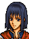
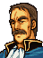

Narration Advance! Lanzenritter
フィアナ義勇軍、マギ団に
レンスター王国の遺臣たちを加え
一軍としての陣容を、まがりなりにも
ととのえたリーフたち『解放軍』は
いよいよターラ救援に向かうべく
再び帝国－トラキア国境を
こえようとしていた。
そこは、人々が『ノエル渓谷』とよぶ
山奥の小さな渓谷だった・・・
Opening 1 Lady Olwen's first appearance!

ラルゴ将軍、変わりはありませんか？

これはオルエンどの
今日もまたていさつですかな？
こんな山奥で戦いもなかろうに
毎日ご苦労さまですな
ていさつの任務はケンプフ将軍の命令です
オルエン様ばかりに命じられて・・・
いやがらせとしか思えません
あら、フレッド
私はダンドラム要塞にいるより
外に出ているほうがいいわ
だって
あのケンプフの顔を見なくてすむもの
ほっほっほっ
これはまた気のおつよいことですな
しかし
ケンプフ将軍も困ったお方だ
上級貴族のお生まれで
将来も約束されておられるのに
どうも人物が小さい
ラインハルト将軍の名声をねたんで
妹のあなたにいやがらせをするとは・・・
まったく、軍人として恥ずべき行いですな
ケンプフ将軍は
兄をライバルだと思いこんでいるのです
・・・年も近い上、お二人とも
若くして将軍になられましたからな
お気持ちはわからぬでもないが・・・
でも、兄はまったく
そんな風には考えてませんのに・・・
そこがまた
ケンプフ将軍の
気に入らぬところなのでしょうな
？
なぜです？
！？
おわかりになられぬか？
・・・無理もない、まだお若いからのう
？ ？
そんな話はともかく
せっかく来られたのだ
ゆっくりしていきなさい・・・
はい、ありがとうございます
では、お言葉にあまえて・・・
Opening 2 Teach us, Dorias!

リーフ様、ノエル渓谷です
向こうにみえるのが
帝国の国境を守る砦です

では
いよいよ帝国領へ進攻するのか
敵の兵力は？
警備隊は少数ですが
ロングアーチと呼ばれる
射程の長い弓があります
この威力は絶大で
先につぶさねば攻略は不可能です
ではどうする？
方法は３つあります
本隊で敵をひきつけ
そのあいだに別働隊で落とす
これが中策
騎兵を用いて一気になだれこむ
これは下策
で、かんじんの上策は？
ここまで申し上げれば
リーフ様はすでにおわかりでしょう
私があらためて
申し上げるまでもありますまい
Enemy turn 4, or on entering the area
オルエンどの
何者かが攻撃をしかけてきた
わしはここで食い止めるゆえ
あなたはダンドラムに
このことを伝えてもらいたい
できれば
私もお手伝いしたいのですが
お許しいただけませんか？
いや
あなたはていさつが任務
まず報告することが先決だ
お気持ちはうれしいが
ダンドラムに戻られた方がよい
では、せめて
時間の許す限り・・・
・・・そこまでおっしゃるのなら
ただし
ダンドラムに戻らねばならぬ
時間までですぞ、よろしいな
ありがとうございます
フレッド、いくわよ！
はっ
Enemy turn 6
そろそろダンドラムへ戻らないと・・・
ラルゴどの
必ず援軍を率いてもどります
それまでどうかご無事で・・・
After seizing
If you seize while holding General Largo prisoner
ラルゴ将軍・・・
なかなかの武人でありましたな
フリージ軍とは初めて戦ったが
見事な戦いぶりだった
あれで前線の小部隊だとしたら
この先の戦いが思いやられるな
はい
フリージ家は名門ゆえ
下級の兵にいたるまで名誉を重んじます
軍としての規律も
大陸でいちにを争うものでしょう
それゆえに強敵とも言えますが
王子の戦い方も
敵に劣らずお見事でした
ラルゴ将軍を殺さずに
捕虜にしたことを言っているのか？
はっ
義をもってこの聖戦を戦い抜くことは
今は亡き
キュアン王子のご遺志をつぐもの
これからも
騎士としての誇りを失わず
つねに正々堂々と戦いたいものです
騎士としての誇り・・・か
そうだな
無用な殺りくだけは
したくないものだな・・・
If you seize after defeating or releasing General Largo
アウグストは
戦い半ばで引き上げた
敵の魔法騎士を見たか？

女騎士でしたな
なかなか手強い相手でした
何者なのだろう？
ダンドラム砦の方に行きましたから
たぶん、我らのことを
知らせに戻ったのでしょうな
ということは
敵はぼくたちを
待ち受けているということか
そういうことです
ダンドラム要塞は
ただでさえ難攻不落と言われる強固な砦
その上に
敵に防戦の準備をする
よゆうを与えてしまいました
ダンドラムの司令官が名将ならば
我らは苦戦を強いられましょう
だが
他にルートはないのだろう
さよう
ターラに行くためには
ダンドラムをぬけるしかありません
では行くしかないだろう
グズグズしていては
ますます不利になるだけだ！
Largo: battle quote
われらが領土をおかすものよ
いったい何が目的だ！
Largo: defeat quote
むぅ・・・もはやこれまでか・・・
Largo: release quote
情けなどいらぬ！
わが首をはねよ！！
Olwen: battle quote
ここは帝国の領土です
すぐに立ち去りなさい！
Fred: battle quote
フリージの領土を侵すとは
きさまら、何者だ！
House top
.png)
あら、解放軍の人たちじゃないの
がんばってね
このトラキアから侵略者たちを
追い出してちょうだいね
そうだ
この杖を持っていきなさいな
きっと役に立つと思うよ
House bottom
.png)
あんたら解放軍のメンバーだろ？
がんばれよ
応援してるからさ
そうだ、この杖を持っていきな
きっと役に立つぜ